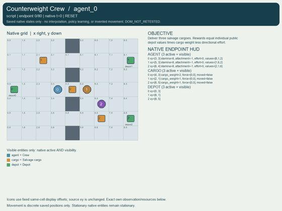
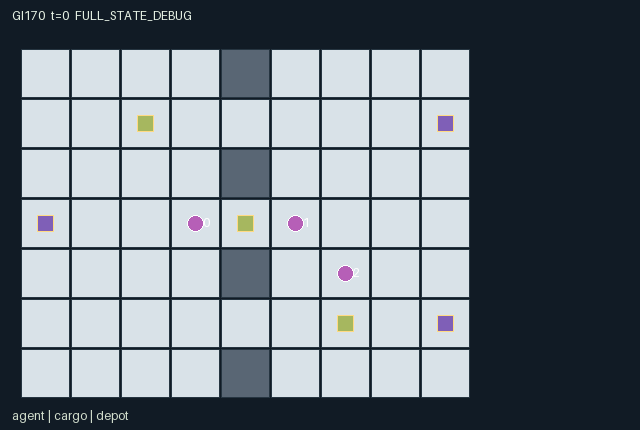

GI170 / SPATIAL
配重搬运队
持续连接的牵引力相加，重货需要合作净力；伙伴休息、松绳、反向用力或占位会改变路线。
Original saved demonstration
Recorded native state, often authored scripts or interventions; information scope and failures are preserved in the original provenance. This is a saved demonstration, not live browser play.

Release verification episode
Untrained uniform legal actions. Actual JAX state sampled along the full original episode; full-state debug camera. No human performance or learning claim.

Run this game
crucibles play --game 170
Start Python locally, then open the address printed by the terminal. Installation, multiplayer, takeover and keyboard controls →
Objective, rewards & ending
Exact task contract
{
"objective": "Deliver three salvage cargoes. Rewards equal individual public depot values times cargo weight less directional effort.",
"natural_termination": "All cargo delivered; otherwise horizon 80. Raw completed states absorb.",
"interaction": "Persistent tethers sum simultaneous force. Heavy cargo requires two net force; partner rest release opposition and blocking change the group route. Light cargo offers outside options.",
"observation_access": "All spatial and payoff-relevant information is public, plus own role identity."
}Declared per-step reward bounds: -1 to 24. Observability: fully_observable.
Rules
- Attach beside cargo, then cardinal actions exert force; release restores free walking.
- Heavy cargo needs net force two; light cargo needs one. Opposed force cancels; equal axis magnitude selects x.
- Workers can share cells. Cargo cannot enter another active cargo or a non-tethered worker; walls and tether footprints constrain travel.
- Rest restores two stamina up to ten; direction costs one even when collective motion fails.
- Any depot accepts cargo and pays each worker its own public value times cargo weight, then removes cargo and releases tethers.
- All cargo delivered ends naturally; otherwise horizon 80.
Original mechanism document (historical status wording retained)
# Counterweight Crew Status: AUTHORED_NOT_EXECUTED. Initial blind attempt_00; train split. Declared A/O/U/H = (3, 119, 7, 80). A three-worker salvage game on a 9 by 7 integer grid. Bulkheads at x=4 leave passages at y=1,3,5. The central cargo needs net force two and two light cargoes need one. Position governs walking, cargo clearance, tether motion and depot delivery. Actions are rest, north/east/south/west, attach and release. Attach chooses minimum distance among active cargo within Manhattan distance one, then smallest cargo ID. A tether persists through rest. A free worker walks; a tethered worker contributes one directional force. Directions cost one stamina and one reward even if a collective move fails. Rest recovers two stamina up to ten. All tethers translate with moving cargo, including a worker who rested or opposed the resulting force. Workers may co-locate. Walking into active cargo or a bulkhead is forbidden. Cargo cannot enter another active cargo or a worker not tethered to it. Its tethered workers must also fit on floor and avoid other active cargo. Forces are simultaneous, with cargo occupancy resolved in ID order 0,1,2. The axis of greater force magnitude determines direction, with x on ties. Magnitude must reach cargo weight. Thus commitment, opposition, depletion, resting and blocking alter peer opportunities over time. Depots are west, northeast and southeast. Public worker-by-depot values are [[6,1,2],[1,6,2],[2,1,6]]. Delivery pays each worker its destination value times cargo weight, removes cargo and releases its tethers. Helping heavy transport, alternating effort and rest, disagreeing about destination, releasing to retrieve light cargo and blocking routes are prospective alternatives. No controller coordinates any worker. All information is public in 119 columns. Scene attributes expose actual stamina, attachment, force and displacement. Invariants stated from source: integer positions in bounds and on floor; active cargo positions distinct; attachment is -1 or an active cargo index; attached distance at most one; stamina [0,10]; force [-3,3]; cargo weight [2,1,1]; each cargo delivered at most once. Reward is bounded [-1,24] because total cargo weight is four and depot value at most six. These are source-level deductions, not numerical results. Terminal interface: a nonterminal raw transition advances scalar int32 t exactly once. Natural completion has priority at a coincident horizon. Truncated equals (t >= max_steps) and not terminated; done_all is their disjunction and equals episode_done. All agent dones share that value. A completed input preserves every state leaf, observation, clock and terminal cause, returning zero float32 reward. Legal masks retain action 0; inactive roles retain only action 0. Invalid IDs or masked actions deterministically become action 0. Raw-step never auto-resets. Representation: fixed-shape int32/bool state, float32 observations and rewards. Small signed counters and IDs use int32. The supplied uint32 reset key is trusted trajectory provenance, not duplicated native state. Random traits, where present, use only that key. Subsequent transitions are deterministic. These are declared interface choices, not actual execution receipts. Provenance and limits: AUTHORED_NOT_EXECUTED, initial blind attempt_00. The five supplied upstream references were read only as bytes for integrity checks, not semantically read or copied. No upstream implementation or license text is incorporated. Rules, native kernel and literal scripts are original to this authoring turn. Trusted static AST, manifest and scene data validators are the only checks performed. Candidate code was never imported or executed. JAX shape behavior, eager/jit/vmap parity, numerical bounds, causal effects, actual rendering, solvability, optimality, strategic richness, non-isomorphism, learning and meta-RL transfer remain unverified. No reward or success acceptance threshold is introduced. Independent gpt-6.1-sol/high integration owns the JaxMARL adapter, sealed execution and real replay/animation. No CSD3, remote browser, model call, training, heldout evidence, prior source/result or unrestricted search was used. The final input freeze records all 22 actual-read inputs with paths, byte counts, hashes and use. Playthroughs: every seed, prefix and suffix is an original literal prospective hypothesis. Source reasoning suggests legality, but no execution verified legality or outcomes. There was no seed search or numerical feedback. Each paired branch differs in exactly one scalar action; later actions are identical. Delay and intended differences explain a testable source dependency, not a measured effect or successful play. ## Literal source evidence - candidate.py line 14: tiles = tiles.at[jnp.array([0, 2, 4, 6]), 4].set(1) - candidate.py line 75: attachment = jnp.where(a == 5, nearest, jnp.where(a == 6, -1, s['attachment'])) - candidate.py line 79: force = jnp.sum(attached[:, :, None].astype(jnp.int32) * dirs[a][:, None, :], axis=0, dtype=jnp.int32) - candidate.py line 87: enough = jnp.maximum(jnp.abs(fx), jnp.abs(fy)) >= s['cargo_weight'][k] - candidate.py line 94: worker_block = jnp.any(jnp.all(pos == target[None, :], axis=1) & ~tether) - candidate.py line 102: payoff = jnp.sum(s['values'][:, destination] * (delivered.astype(jnp.int32) * s['cargo_weight'])[None, :], axis=1) - candidate.py line 117: n['terminated'] = ~jnp.any(active) - candidate.py line 124: state['episode_done'], ## Method locations - reset: candidate.py lines 12-40. - floor_ok: candidate.py lines 42-45. - legal_actions: candidate.py lines 47-56. - observe: candidate.py lines 58-66. - advance: candidate.py lines 68-120. - raw_step: candidate.py lines 122-131.
Commands
Roles & abilities
agent_0 Worker 0 favors west depot
agent_1 Worker 1 favors northeast depot
agent_2 Worker 2 favors southeast depot
Observation permissions
Training receives only the original observation rows. Role cameras use declared visibility; debug cameras are explicitly marked. Local benchmark records log debug exposure and role takeover history.
Exact observation layout
[
{
"slice": [
0,
3
],
"meaning": "Own worker ID one-hot",
"visibility": "self"
},
{
"slice": [
3,
4
],
"meaning": "Clock",
"visibility": "public"
},
{
"slice": [
4,
10
],
"meaning": "All worker xy positions",
"visibility": "public"
},
{
"slice": [
10,
13
],
"meaning": "All stamina",
"visibility": "public"
},
{
"slice": [
13,
16
],
"meaning": "All attachment indices; -1 free",
"visibility": "public"
},
{
"slice": [
16,
22
],
"meaning": "Cargo xy positions",
"visibility": "public"
},
{
"slice": [
22,
25
],
"meaning": "Active cargo bits",
"visibility": "public"
},
{
"slice": [
25,
28
],
"meaning": "Cargo weights",
"visibility": "public"
},
{
"slice": [
28,
34
],
"meaning": "Cargo net xy force",
"visibility": "public"
},
{
"slice": [
34,
40
],
"meaning": "Depot xy positions",
"visibility": "public"
},
{
"slice": [
40,
49
],
"meaning": "Public worker by depot value matrix row-major",
"visibility": "public"
},
{
"slice": [
49,
112
],
"meaning": "Public 7 by 9 yx tile map; 0 floor, 1 bulkhead",
"visibility": "public"
},
{
"slice": [
112,
113
],
"meaning": "Episode done",
"visibility": "public"
},
{
"slice": [
113,
116
],
"meaning": "Worker effort flags",
"visibility": "public"
},
{
"slice": [
116,
119
],
"meaning": "Cargo moved flags",
"visibility": "public"
}
]Entity visibility & attributes
[
{
"id": "agent",
"kind": "agent",
"count": 3,
"position": [
"agent_pos"
],
"active": [
"agent_active"
],
"visibility": [
"agent_visible"
],
"attributes": [
{
"state_path": [
"stamina"
],
"meaning": "Stamina reserve",
"display": "bar"
},
{
"state_path": [
"attachment"
],
"meaning": "Cargo attachment index; -1 means free",
"display": "category"
},
{
"state_path": [
"effort"
],
"meaning": "Directional effort spent this transition",
"display": "number"
},
{
"state_path": [
"values"
],
"meaning": "Public values for west northeast southeast depots",
"display": "number"
}
]
},
{
"id": "cargo",
"kind": "object",
"count": 3,
"position": [
"cargo_pos"
],
"active": [
"cargo_active"
],
"visibility": [
"cargo_visible"
],
"attributes": [
{
"state_path": [
"cargo_weight"
],
"meaning": "Net force required to move",
"display": "number"
},
{
"state_path": [
"force"
],
"meaning": "Chosen net xy force",
"display": "direction"
},
{
"state_path": [
"moved"
],
"meaning": "Moved this transition",
"display": "flag"
}
]
},
{
"id": "depot",
"kind": "landmark",
"count": 3,
"position": [
"depot_pos"
],
"active": [
"depot_active"
],
"visibility": [
"depot_visible"
],
"attributes": []
}
]Actual verification & provenance
Per-game execution receipt
{
"game": "gi170",
"status": "PASS",
"verification_revision": 2,
"source_sha256": "7a946fd4f66075d95dfd90d9c047c13c5aafbca39d647bf9b5f12a10b2753c99",
"seed": 20261101,
"runtime": {
"jax": "0.4.38",
"numpy": "1.26.4",
"devices": [
"TFRT_CPU_0"
]
},
"dimensions": {
"num_agents": 3,
"observation_size": 119,
"num_actions": 7,
"max_steps": 80
},
"checks": {
"eager_reset": {
"status": "PASS",
"seconds": 0.7194497585296631
},
"observation_spaces_legal_masks": {
"status": "PASS",
"seconds": 1.1161704063415527
},
"eager_step": {
"status": "PASS",
"seconds": 0.8136806488037109
},
"jit_reset": {
"status": "PASS",
"seconds": 0.06919407844543457
},
"jit_step": {
"status": "PASS",
"seconds": 1.361997365951538
},
"eager_jit_integer_parity_float_measurement": {
"status": "PASS",
"seconds": 0.001004934310913086
},
"jit_vmap_reset": {
"status": "PASS",
"seconds": 0.1186835765838623
},
"jit_vmap_step": {
"status": "PASS",
"seconds": 1.2672502994537354
},
"outer_autoreset_api": {
"status": "PASS",
"seconds": 1.0643012523651123
},
"full_original_horizon_episode_and_render": {
"status": "PASS",
"seconds": 1.158215045928955
}
},
"human_scores": null,
"browser_controls": "PENDING",
"failures": [],
"elapsed_seconds": 8.229114055633545,
"float_parity_max_abs": 0.0,
"numerical_parity": "EXACT",
"raw_terminal_absorbing": "PASS",
"terminal_outer_reset": "PASS",
"episode_steps": 80,
"scripted_random_returns": [
-55.0,
-53.0,
-49.0
],
"terminal": true,
"demo_information": "FULL_STATE_DEBUG",
"demo_frames": 28,
"render_roles_checked": 3
}Chromium control verification
{
"game": "gi170",
"status": "PASS",
"human_scores": null,
"engineering": true,
"checks": [
"catalog_selected_and_real_native_reset",
"dom_queue_and_native_step",
"second_participant_ownership_and_native_joint_step",
"all_roles_individually_controllable_no_role_cap",
"explicit_debug_camera",
"release_to_pure_ai_without_reset"
],
"seconds": 4.63189172744751
}Original identity and file hashes
{
"id": 170,
"key": "gi170",
"title": "配重搬运队",
"summary": "持续连接的牵引力相加，重货需要合作净力；伙伴休息、松绳、反向用力或占位会改变路线。",
"tags": [
"协同搬运",
"行动耦合"
],
"family": "spatial",
"dimensions": {
"num_agents": 3,
"observation_size": 119,
"num_actions": 7,
"max_steps": 80
},
"source_sha256": "7a946fd4f66075d95dfd90d9c047c13c5aafbca39d647bf9b5f12a10b2753c99",
"manifest_sha256": "7b3b85fad62c858134008c4d60db6075cc74b6a0b7928c91286bef2bab675438",
"files": [
{
"file": "candidate.py",
"sha256": "7a946fd4f66075d95dfd90d9c047c13c5aafbca39d647bf9b5f12a10b2753c99",
"bytes": 7432,
"origin": "work/exp_2/game_incubator_v3/community_games222_225_visualization_root222_v1/native154_candidate/registry/v2/games/game-v3-00170/candidate.py"
},
{
"file": "manifest.json",
"sha256": "7b3b85fad62c858134008c4d60db6075cc74b6a0b7928c91286bef2bab675438",
"bytes": 11381,
"origin": "work/exp_2/game_incubator_v3/community_games222_225_visualization_root222_v1/native154_candidate/registry/v2/games/game-v3-00170/manifest.json"
},
{
"file": "scene.json",
"sha256": "689b2e208cbcde68b4f9df21779a9e2e91f8a2f5e8f5230d0429b5d5427de254",
"bytes": 6165,
"origin": "work/exp_2/game_incubator_v3/community_games222_225_visualization_root222_v1/native154_candidate/registry/v2/games/game-v3-00170/scene.json"
},
{
"file": "mechanism.md",
"sha256": "289d3e8a837884e7460d5a0057fad81150348a3074414cd500dfda147024bc34",
"bytes": 5763,
"origin": "work/exp_2/game_incubator_v3/sources/game-v3-00170/attempt_00/mechanism.md"
},
{
"file": "playthrough.json",
"sha256": "cd80adf6f74e2398bb46a1c6195048d18aab028e31e3fd9c544515241b4ed0a3",
"bytes": 2681,
"origin": "work/exp_2/game_incubator_v3/sources/game-v3-00170/attempt_00/playthrough.json"
}
],
"original_status": "NATIVE154_REFERENCE",
"original_saved_replay": true,
"release_validation": "PASS",
"human_scores": null,
"browser_validation": "PASS"
}